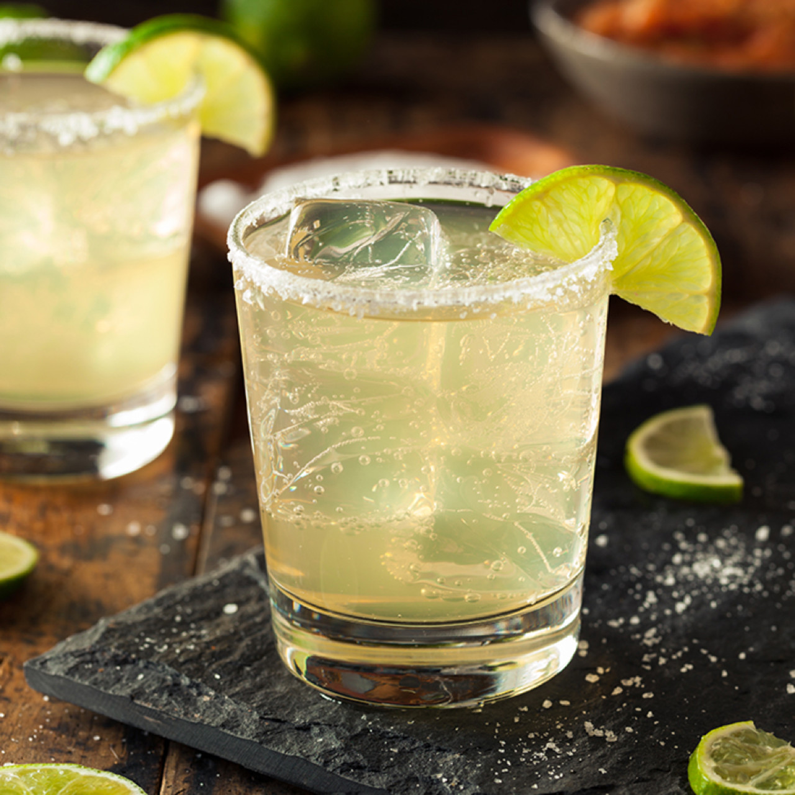

A Taste of France
French food and cooking are generally considered the backbone of many cuisines across the Western world. A beloved tradition, the French Gastronomic meal is classified as a UNESCO intangible cultural heritage of humanity.
El alcohol

Traditional Mexican cuisine is a comprehensive cultural model comprising farming, ritual practices, age-old skills, culinary techniques, ancestral community customs, and manners. It is made possible by collective participation in the entire traditional food chain: from planting and harvesting to cooking and eating.